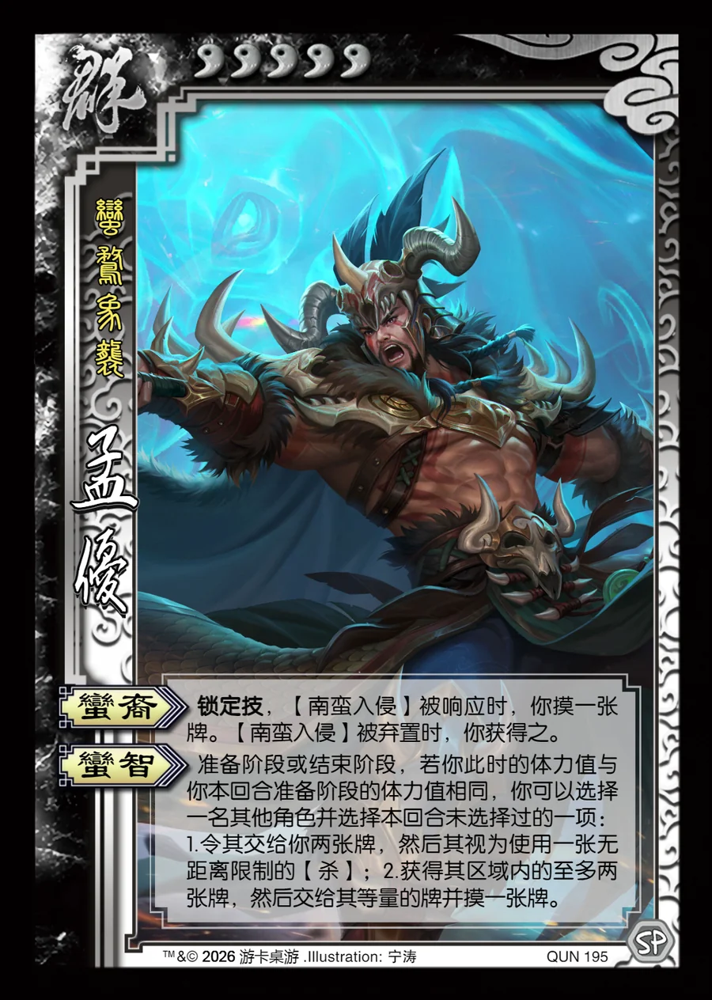

点击卡面查看大图
群
孟优
♥5蛮鹜象袭
蛮裔锁定技
锁定技，【南蛮入侵】被响应时，你摸一张牌。【南蛮入侵】被弃置时，你获得之。
蛮智
准备阶段或结束阶段，若你此时的体力值与你本回合准备阶段的体力值相同，你可以选择一名其他角色并选择本回合未选择过的一项：1.令其交给你两张牌，然后其视为使用一张无距离限制的【杀】；2.获得其区域内的至多两张牌，然后交给其等量的牌并摸一张牌。

点击卡面查看大图
蛮鹜象袭
锁定技，【南蛮入侵】被响应时，你摸一张牌。【南蛮入侵】被弃置时，你获得之。
准备阶段或结束阶段，若你此时的体力值与你本回合准备阶段的体力值相同，你可以选择一名其他角色并选择本回合未选择过的一项：1.令其交给你两张牌，然后其视为使用一张无距离限制的【杀】；2.获得其区域内的至多两张牌，然后交给其等量的牌并摸一张牌。